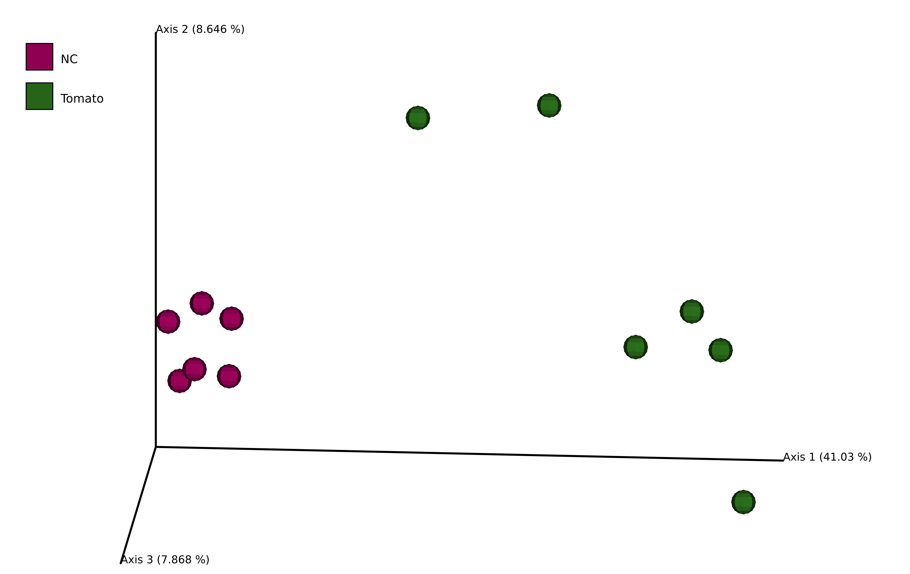
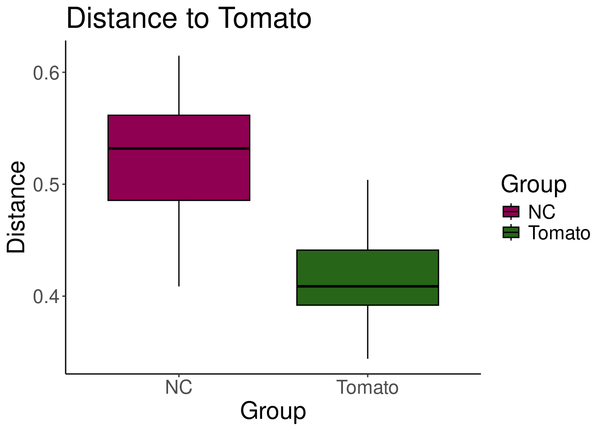

conda activate qiime2-amplicon-2024.10Metabarcoding: Tomate 16S usando Qiime2

Introducción
Datos de partida “Disentangling the genetic basis of rhizosphere microbiome assembly in tomato”
Para este tutorial vamos a utilizar Qiime2, aquí lo puedes instalar según sea tu sistema operativo. Para los siguientes pasos vamos a autilizar la distribución “amplicon”. Este tutorial se hizo utilizando el sistema operativo Ubuntu 22.04.5 LTS, en un equipo con 24 Gb de RAM Intel® Core™ i7-3610QM CPU @ 2.30GHz × 8. Todo se hizo usando la terminal.
Una vez instalado qiime activa el ambiente conda.
Primer paso: Genera una carpeta (directorio) exclusiva para llevar a cabo el proyecto, en este caso el nombre de la carpeta es 2025_Demo_tomato_16S, en ella se va generar una carpeta para guardar los genomas 16S que tendrá por nombre data.
Lo genomas 16S los podrás encontrar aquí para descargar.
Escribe los siguiente comando en la terminal para crear el directorio.
mkdir 2025_Demo_tomato_16S
cd 2025_Demo_tomato_16S
mkdir dataImportar datos pareados con Qiime2
Vamos a generar un archivo manifiesto en el vamos a indicar la localización de las lecturas pareadas. El archivo se ve de la siguiente manera:
sample.id forward.absolute.filepath reverse.absolute.filepath
1 Tomato_1 $PWD/data/Tomato_1_R1.fastq.gz $PWD/data/Tomato_1_R2.fastq.gz
2 Tomato_2 $PWD/data/Tomato_2_R1.fastq.gz $PWD/data/Tomato_2_R2.fastq.gz
3 Tomato_3 $PWD/data/Tomato_3_R1.fastq.gz $PWD/data/Tomato_3_R2.fastq.gz
4 Tomato_4 $PWD/data/Tomato_4_R1.fastq.gz $PWD/data/Tomato_4_R2.fastq.gz
5 Tomato_5 $PWD/data/Tomato_5_R1.fastq.gz $PWD/data/Tomato_5_R2.fastq.gz
6 Tomato_6 $PWD/data/Tomato_6_R1.fastq.gz $PWD/data/Tomato_6_R2.fastq.gz
7 NC_1 $PWD/data/NC_1_R1.fastq.gz $PWD/data/NC_1_R2.fastq.gz
8 NC_2 $PWD/data/NC_2_R1.fastq.gz $PWD/data/NC_2_R2.fastq.gz
9 NC_3 $PWD/data/NC_3_R1.fastq.gz $PWD/data/NC_3_R2.fastq.gz
10 NC_4 $PWD/data/NC_4_R1.fastq.gz $PWD/data/NC_4_R2.fastq.gz
11 NC_5 $PWD/data/NC_5_R1.fastq.gz $PWD/data/NC_5_R2.fastq.gz
12 NC_6 $PWD/data/NC_6_R1.fastq.gz $PWD/data/NC_6_R2.fastq.gzEste archivo lo vamos a nombrar como tomato_manifest, este archivo es de tipo tab-separate-value. Puedes descargar el archivo manifiesto aquí.
NOTA ⚠️: Durante todo este tutorial vamos a ir generando dos clases de archivos
.qzaQIIME Zipped Artifact.qzvQIIME Zipped Visualization
Para ver todos los archivos .qzv basta con utilizar el comando qiime tools view seguido del nombre de tu archivo. Más adelante lo verás más claro.
Para importar los secuencias 16S pareadas vamos a utilizar el siguiente código:
qiime tools import \
--type 'SampleData[PairedEndSequencesWithQuality]' \
--input-path tomato_manifest \
--output-path paired-end-tomato-16s.qza \
--input-format PairedEndFastqManifestPhred33V2Para visualizar la calidad de los archivos importado podemos usar el siguiente comando:
qiime demux summarize \
--i-data paired-end-tomato-16s.qza \
--o-visualization summary_tmp_tomato_16s.qzv
qiime tools view summary_tmp_tomato_16s.qzvNúmero de lecturas por muestra
| sample ID | forward sequence count | reverse sequence count |
|---|---|---|
| NC_1 | 45207 | 45207 |
| NC_2 | 42412 | 42412 |
| NC_3 | 39468 | 39468 |
| NC_4 | 40529 | 40529 |
| NC_5 | 41755 | 41755 |
| NC_6 | 40153 | 40153 |
| Tomato_1 | 34546 | 34546 |
| Tomato_2 | 41028 | 41028 |
| Tomato_3 | 40793 | 40793 |
| Tomato_4 | 39477 | 39477 |
| Tomato_5 | 33744 | 33744 |
| Tomato_6 | 37507 | 37507 |
Cutadapt
Una vez importadas las secuencias, vamos a realizar un preprocesmaiento con cutadapt para eliminar adapdores, qiime2 nos permite hacer esto utilizando la siguiente instrucción:
qiime cutadapt trim-paired \
--i-demultiplexed-sequences paired-end-tomato-16s.qza \
--p-front-f CCTACGGGNGGCWGCAG \
--p-adapter-f GGATTAGATACCCBDGTAGTC \
--p-front-r GACTACHVGGGTATCTAATCC \
--p-adapter-r CTGCWGCCNCCCGTAGG \
--p-match-read-wildcards \
--p-discard-untrimmed \
--o-trimmed-sequences trimmed_paired-end-tomato-16s.qza --p-cores 5Explicación del comando:
--i-demultiplexed-sequences paired-end-tomato-16s.qza
Este parámetro indica el archivo de entrada que contiene tus secuencias pareadas ya demultiplexadas. El archivo de entrada es
paired-end-tomato-16s.qza.Adaptadores para las lecturas forward y reverse
--p-front-f CCTACGGGNGGCWGCAG: Adaptador 5’ de las lecturas forward.--p-adapter-f GGATTAGATACCCBDGTAGTC: Adaptador 3’ de las lecturas forward.--p-front-r GACTACHVGGGTATCTAATCC: Adaptador 5’ de las lecturas reverse.--p-adapter-r CTGCWGCCNCCCGTAGG: Adaptador 3’ de las lecturas reverse.
--p-match-read-wildcards
Este flag permite que los comodines (como N, W, B, D, H, V) en los adaptadores coincidan con las bases en las secuencias de lectura.
--p-discard-untrimmed
Esta opción descarta las secuencias que no contienen los adaptadores especificados, asegurando que solo se conserven las lecturas correctamente recortadas.
--o-trimmed-sequences trimmed.qza
Define el archivo de salida en formato
QZA(trimmed_paired-end-tomato-16s.qza) que contendrá las secuencias recortadas.Qiimegenera un solo archivoQZAque puedes usar en pasos posteriores del análisis.
Explorar los archivos
Qiime permite generar un reporte HTML para ver la cantidad de lecturas por muestras y métricas generales de secuencia. Para ello podemos generar el siguiente archivo:
qiime demux summarize \
--i-data trimmed_paired-end-tomato-16s.qza \
--o-visualization summary_tomato_16s.qzvPara visualizar este archivo utiliza el siguiente código:
qiime tools view summary_tomato_16s.qzvNúmero de cuentas por muestras después de cuatadapt
| sample ID | forward sequence count | reverse sequence count |
|---|---|---|
| NC_1 | 44773 | 44773 |
| NC_2 | 41735 | 41735 |
| NC_3 | 39165 | 39165 |
| NC_4 | 40180 | 40180 |
| NC_5 | 41342 | 41342 |
| NC_6 | 39829 | 39829 |
| Tomato_1 | 34194 | 34194 |
| Tomato_2 | 40436 | 40436 |
| Tomato_3 | 40454 | 40454 |
| Tomato_4 | 39106 | 39106 |
| Tomato_5 | 33238 | 33238 |
| Tomato_6 | 37085 | 37085 |
Filtrado de lecturas con DADA2
qiime dada2 denoise-paired \
--i-demultiplexed-seqs trimmed_paired-end-tomato-16s.qza \
--p-trunc-len-f 280 \
--p-trunc-len-r 260 \
--o-representative-sequences rep-seqs-dada2-tomato-16s.qza \
--o-table table-dada2-tomato-16s.qza \
--o-denoising-stats stats-dada2-tomato-16s.qza \
--p-n-threads 5Con esto podemos ver un reporte de la cantidad de lecturas filtradas:
qiime metadata tabulate \
--m-input-file stats-dada2-tomato-16s.qza \
--o-visualization stats-dada2-tomato-16s.qzv
qiime tools view stats-dada2-tomato-16s.qzvLecturas filtradas con DADA2
| sample-id | input | filtered | percentage of input passed filter | denoised | merged | percentage of input merged | non-chimeric | percentage of input non-chimeric |
|---|---|---|---|---|---|---|---|---|
| #q2:types | numeric | numeric | numeric | numeric | numeric | numeric | numeric | numeric |
| NC_1 | 44773 | 33553 | 74.94 | 27791 | 21557 | 48.15 | 21086 | 47.1 |
| NC_2 | 41735 | 30374 | 72.78 | 25195 | 19560 | 46.87 | 19109 | 45.79 |
| NC_3 | 39165 | 30886 | 78.86 | 25397 | 19667 | 50.22 | 19200 | 49.02 |
| NC_4 | 40180 | 31675 | 78.83 | 26583 | 20699 | 51.52 | 20335 | 50.61 |
| NC_5 | 41342 | 32540 | 78.71 | 27628 | 21835 | 52.82 | 21225 | 51.34 |
| NC_6 | 39829 | 31863 | 80 | 27612 | 22583 | 56.7 | 20297 | 50.96 |
| Tomato_1 | 34194 | 27222 | 79.61 | 23865 | 19237 | 56.26 | 17999 | 52.64 |
| Tomato_2 | 40436 | 30780 | 76.12 | 26517 | 20876 | 51.63 | 19544 | 48.33 |
| Tomato_3 | 40454 | 32515 | 80.38 | 28693 | 23733 | 58.67 | 20976 | 51.85 |
| Tomato_4 | 39106 | 30974 | 79.21 | 26607 | 20830 | 53.27 | 19951 | 51.02 |
| Tomato_5 | 33238 | 26701 | 80.33 | 22755 | 17761 | 53.44 | 16893 | 50.82 |
| Tomato_6 | 37085 | 30045 | 81.02 | 26154 | 20467 | 55.19 | 19112 | 51.54 |
Después de terminar el paso de filtrado de calidad, querrás explorar los datos que obtuviste. Este filtrado es importante porque elimina las secuencias de baja calidad o con errores, dejándote datos más confiables para trabajar. Para revisar esos datos, puedes usar dos comandos que te muestran resúmenes visuales fáciles de entender.
Los datos asociados los vamos a depositar en un archivo nombrado Experiment_Design.tsv:
# A tibble: 13 × 4
`Sample-id` accession sra_run Type
<chr> <chr> <chr> <chr>
1 #q2:types categorical categorical categorical
2 Tomato_1 SRX13358040 SRR17174837 Tomato
3 Tomato_2 SRX13358039 SRR17174838 Tomato
4 Tomato_3 SRX13358038 SRR17174839 Tomato
5 Tomato_4 SRX13358037 SRR17174840 Tomato
6 Tomato_5 SRX13358036 SRR17174841 Tomato
7 Tomato_6 SRX13358035 SRR17174842 Tomato
8 NC_1 SRX13358032 SRR17174845 NC
9 NC_2 SRX13358026 SRR17174851 NC
10 NC_3 SRX13358024 SRR17174853 NC
11 NC_4 SRX13358022 SRR17174855 NC
12 NC_5 SRX13358630 SRR17174856 NC
13 NC_6 SRX13358517 SRR17174969 NC qiime feature-table summarize \
--i-table table-dada2-tomato-16s.qza \
--o-visualization table-dada2-tomato-16s.qzv \
--m-sample-metadata-file Experiment_Design.tsvqiime feature-table tabulate-seqs \
--i-data rep-seqs-dada2-tomato-16s.qza \
--o-visualization rep-seqs-dada2-tomato-16s.qzaEl archivo table-dada2-tomato-16s.qza contiene la matriz de cuentas; en el apéndice Abrir archivos de Qiime2 en R podrás ver a detlla como trabajar con los archivos .qza en R; los primeros 10 ASV se ven del siguiente modo:
| ASV | NC_1 | NC_2 | NC_3 | NC_4 | NC_5 | NC_6 | Tomato_1 | Tomato_2 | Tomato_3 | Tomato_4 | Tomato_5 | Tomato_6 |
|---|---|---|---|---|---|---|---|---|---|---|---|---|
| 9002efc8d0aae0e00570a0ef34a8f2f4 | 0 | 0 | 0 | 0 | 0 | 0 | 1280 | 1170 | 3153 | 1873 | 795 | 772 |
| 41ae7e08f17de260576e380c2f703a0f | 20 | 1360 | 537 | 161 | 1272 | 3080 | 36 | 18 | 82 | 116 | 21 | 66 |
| 0be25e4c445f978d165c30f36c9b41ae | 0 | 0 | 0 | 0 | 0 | 0 | 807 | 1201 | 682 | 393 | 537 | 955 |
| d1316b26e5350da36e6456499ecdfe18 | 72 | 0 | 326 | 102 | 283 | 54 | 401 | 694 | 498 | 355 | 426 | 819 |
| 1624f6ce2f3a06b5b884c321e3d24587 | 0 | 0 | 0 | 0 | 0 | 0 | 543 | 537 | 1332 | 929 | 358 | 314 |
| 684433f1b511ba86c277251510fce2d7 | 16 | 0 | 9 | 49 | 128 | 11 | 413 | 312 | 661 | 266 | 529 | 785 |
| 6e21d8726024d1197fad8919bd53ed0a | 299 | 196 | 262 | 337 | 561 | 283 | 109 | 126 | 187 | 153 | 181 | 68 |
| fd63b583680917403001aa46a7cc26ca | 6 | 348 | 19 | 25 | 16 | 1365 | 24 | 0 | 0 | 55 | 14 | 6 |
| bcc71cc1efae148c0f7572338d3e2f86 | 0 | 0 | 0 | 0 | 0 | 0 | 663 | 101 | 769 | 131 | 85 | 67 |
| febb741f9cd062f7e0471bd9ad45447f | 4 | 0 | 34 | 23 | 0 | 1642 | 0 | 0 | 0 | 0 | 0 | 0 |
El comando
feature-table summarizeEste comando te ayuda a ver:
Cuántas secuencias hay en cada muestra: por ejemplo, cuántas secuencias tiene cada una de tus muestras biológicas.
Cuántas secuencias hay por característica: las características pueden ser cosas como tipos de bacterias o genes que encontraste, en caso de agregar metadatos.
Gráficos (histogramas): estos te muestran cómo se distribuyen las secuencias.
Estadísticas básicas: algunos números que resumen tus datos de forma general, para que tengas una idea rápida de lo que tienes.
El comando
feature-table tabulate-seqsEste comando es útil porque:
Te da una lista que conecta cada ID de característica (un código único para cada característica) con la secuencia de ADN que representa.
Además, te ofrece enlaces para buscar esas secuencias en una base de datos grande llamada NCBI nt.
Medidas de diversidad
Generación de un árbol filogenético
qiime phylogeny align-to-tree-mafft-fasttree \
--i-sequences rep-seqs-dada2-tomato-16s.qza \
--o-alignment aligned-rep-seqs-dada2-tomato-16s.qza \
--o-masked-alignment masked-aligned-rep-seqs-dada2-tomato-16s.qza \
--o-tree unrooted-tree.qza \
--o-rooted-tree rooted-tree-dada2-tomato-16s.qzaMétricas general de filogenética
qiime diversity core-metrics-phylogenetic \
--i-phylogeny rooted-tree-dada2-tomato-16s.qza \
--i-table table-dada2-tomato-16s.qza \
--p-sampling-depth 16890 \
--m-metadata-file Experiment_Design.tsv \
--output-dir core-metrics-resultsAlfa diversidad (α-diversidad)
La alfa diversidad es la diversidad media de especies microbianas en un lugar a escala local. Representa la riqueza de especies y su abundancia relativa dentro de una sola muestra o hábitat. Es uno de los componentes fundamentales de la diversidad biológica junto con la diversidad beta y gamma.
Características principales:
- Mide la diversidad dentro de una muestra individual
- Considera tanto el número de especies como su abundancia relativa
- Es independiente de la escala espacial específica
- Fundamental para caracterizar comunidades microbianas
Simpson Index
El índice de Simpson mide la probabilidad de que dos individuos tomados al azar de una muestra pertenezcan a la misma especie. Es sensible a la dominancia de especies abundantes.
Fórmula del Índice de Simpson:
\[D = 1 - \sum_{i=1}^{S} p_i^2\]
donde:
\(D\) = índice de Simpson (diversidad)
\(S\) = número de especies (riqueza)
\(p_i\) = proporción de la especie \(i\) en la muestra: $p_i = ra
c{n_i}{N}$
- \(n_i\) = número de individuos de la especie \(i\) - \(N\) = número total de individuos
Algunas variantes:
- Índice de Simpson original: \(\lambda = \sum p_i^2\)
- Diversidad de Simpson: \(1/\lambda\)
Interpretación:
- \(D\) cercano a 1 indica alta diversidad (baja dominancia)
- \(D\) cercano a 0 indica baja diversidad (alta dominancia)
qiime diversity alpha-group-significance \
--i-alpha-diversity simpson_diversity.qza \
--m-metadata-file Experiment_Design.tsv \
--o-visualization core-metrics-results/simpson-group-significance.qzvqiime diversity alpha-group-significance \
--i-alpha-diversity simpson_diversity.qza \
--m-metadata-file Experiment_Design.tsv \
--o-visualization core-metrics-results/simpson-group-significance.qzvqiime tools view core-metrics-results/simpson-group-significance.qzv| Group 1 | Group 2 | H | p-value | q-value |
|---|---|---|---|---|
| NC (n=6) | Tomato (n=6) | 3.692308 | 0.05466394 | 0.05466394 |
Otras métricas
qiime diversity alpha-group-significance \
--i-alpha-diversity core-metrics-results/faith_pd_vector.qza \
--m-metadata-file Experiment_Design.tsv \
--o-visualization core-metrics-results/faith-pd-group-significance.qzvqiime diversity alpha-group-significance \
--i-alpha-diversity core-metrics-results/evenness_vector.qza \
--m-metadata-file Experiment_Design.tsv \
--o-visualization core-metrics-results/evenness-group-significance.qzvLos siguientes gráficos y tablas de evenness y faith se obtuvieron a partir de los archivos .qzv generados, asi como las tablas de significancia kruskal-wallis-pairwise.
qiime tools view evenness-group-significance.qzv
qiime tools view faith-pd-group-significance.qzvEveness (equitabilidad)
La Evenness o equitabilidad mide qué tan uniformemente están distribuidas las abundancias de las especies en una comunidad. Una alta equitabilidad indica que las especies tienen abundancias similares.
Índice de Equitabilidad de Pielou:
\[J' = \frac{H'}{H'_{\max}} = \frac{H'}{\ln S}\]
donde:
- \(J'\) = índice de equitabilidad de Pielou
- \(H'\) = índice de Shannon observado
- \(H'_{\max}\) = diversidad máxima posible = \(\ln S\)
- \(S\) = número de especies
Interpretación:
- Valores entre 0 y 1
- 0 = máxima inequidad (una especie domina completamente)
- 1 = máxima equidad (todas las especies igualmente abundantes)

| Group 1 | Group 2 | H | p-value | q-value |
|---|---|---|---|---|
| NC (n=6) | Tomato (n=6) | 3.692308 | 0.05466394 | 0.05466394 |
Faith’s Phylogenetic Diversity (PD)
Faith’s Phylogenetic Diversity (PD) es un índice que incorpora información filogenética para medir la diversidad evolutiva de una comunidad. No solo considera el número de especies sino también sus relaciones evolutivas.
Fórmula de Faith PD:
\[PD = \sum_{i=1}^{N} L_i\]
donde:
- \(PD\) = diversidad filogenética de Faith
- \(N\) = número de ramas del árbol filogenético que conectan las especies presentes
- \(L_i\) = longitud de la rama \(i\) en el árbol filogenético
- Las ramas se suman desde las especies hasta la raíz del árbol
Características principales:
- Incorpora historia evolutiva
- Útil para prioridades de conservación
- Medida en unidades de tiempo evolutivo
- Mayor PD indica mayor diversidad evolutiva

| Group 1 | Group 2 | H | p-value | q-value |
|---|---|---|---|---|
| NC (n=6) | Tomato (n=6) | 8.307692 | 0.003947752 | 0.003947752 |
Curvas de rarefacción
La alfa-rarefacción es una técnica para evaluar cómo crece la diversidad “intra-muestra” (α-diversidad) a medida que aumentas el número de lecturas secuenciadas. En metagenómica o secuenciación 16S, su objetivo principal es:
Submuestrear tu biblioteca de lecturas a distintos “depths” (profundidades de secuenciación): por ejemplo, tomar aleatoriamente 100, 200, …, 4 000 lecturas de cada muestra.
Calcular un índice de α-diversidad (observed OTUs, Shannon, Simpson, Faith’s PD, etc.) en cada submuestra.
Trazar ese índice frente al número de lecturas: obtienes una curva de rarefacción.
qiime diversity alpha-rarefaction \
--i-table table-dada2-tomato-16s.qza \
--i-phylogeny rooted-tree-dada2-tomato-16s.qza \
--p-max-depth 20000 \
--m-metadata-file Experiment_Design.tsv \
--o-visualization alpha-rarefaction-dada2-tomato-16s.qzvqiime tools view alpha-rarefaction-dada2-tomato-16s.qzvObserved Features
Las Observed Features representan simplemente el número de características taxonómicas diferentes (especies, géneros, familias, etc.) observadas en una muestra. Es la medida más básica de riqueza de especies.
Características principales:
- Medida directa de riqueza taxonómica
- No considera abundancia relativa
- Sensible al esfuerzo de muestreo
- Base para otros índices de diversidad
La fórmula es simplemente:
\[S = \text{número total de especies observadas}\]
donde:
- \(S\) = riqueza de especies observadas
Shannon
El índice de Shannon (Shannon-Weaver o Shannon-Wiener) mide la biodiversidad específica considerando tanto la riqueza de especies como su abundancia relativa. Está basado en la teoría de la información y mide la incertidumbre para predecir la especie de un individuo tomado al azar.
Fórmula del índice de Shannon:
\[H' = -\sum_{i=1}^{S} p_i \ln p_i\]
donde:
- \(H'\) = índice de Shannon
- \(S\) = número de especies (riqueza de especies)
- \(p_i\) = proporción de individuos de la especie \(i\) respecto al total: \(p_i = \frac{n_i}{N}\)
- \(n_i\) = número de individuos de la especie \(i\)
- \(N\) = número total de individuos de todas las especies
- \(\ln\) = logaritmo natural
Interpretación:
- Valores entre 0.5 y 5 en ecosistemas naturales
- Valores < 2: baja diversidad
- Valores > 3: alta diversidad
- Valores más altos indican mayor diversidad y equitabilidad
Faith PD
La diversidad filogenética de Faith (PD de Faith) es una medida de la biodiversidad que cuantifica la amplitud de la historia evolutiva representada por un conjunto de especies u otras unidades taxonómicas, definida como la suma de las longitudes de las ramas de un árbol filogenético que conectan los miembros del conjunto.
Beta diversidad (β-diversidad)
La beta diversidad es la relación entre la diversidad regional y la diversidad local de especies. Mide el grado de diferenciación o recambio de especies entre diferentes sitios o comunidades. En microbiología, nos permite comparar qué tan similares o diferentes son las comunidades microbianas entre distintas muestras.
Características principales:
- Mide la variación en composición entre comunidades
- Puede deberse a recambio de especies o anidamiento
- Valores altos indican comunidades muy diferentes
- Valores bajos indican comunidades similares
La diversidad β verdadera se calcula como:
\[\beta = \frac{\gamma}{\alpha}\]
donde:
- \(\beta\) = diversidad beta verdadera (número efectivo de comunidades)
- \(\gamma\) = diversidad total del conjunto de datos
- \(\alpha\) = diversidad alfa promedio
Distancia Bray Curtis
La distancia de Bray-Curtis es una medida de disimilitud composicional entre dos sitios basada en las abundancias de especies. Es ampliamente utilizada en ecología microbiana para comparar comunidades.
Fórmula de Bray-Curtis:
\[BC_{ij} = 1 - \frac{2C_{ij}}{S_i + S_j}\]
o de forma equivalente:
\[BC_{ij} = \frac{\sum_{k=1}^{n} |x_{ik} - x_{jk}|}{\sum_{k=1}^{n} (x_{ik} + x_{jk})}\]
donde:
- \(BC_{ij}\) = distancia de Bray-Curtis entre sitios \(i\) y \(j\)
- \(C_{ij}\) = suma de los valores menores para especies comunes entre ambos sitios
- \(S_i\), \(S_j\) = número total de individuos contados en los sitios \(i\) y \(j\)
- \(x_{ik}\), \(x_{jk}\) = abundancia de la especie \(k\) en los sitios \(i\) y \(j\)
- \(n\) = número total de especies
Interpretación:
- Valores entre 0 y 1
- 0 = sitios idénticos en composición
- 1 = sitios completamente diferentes
- No considera relaciones filogenéticas
qiime tools view core-metrics-results/bray_curtis_emperor.qzv
PERMANOVA
qiime diversity beta-group-significance \
--i-distance-matrix core-metrics-results/bray_curtis_distance_matrix.qza \
--m-metadata-file Experiment_Design.tsv \
--o-visualization core-metrics-results/curtis-significance.qzv \
--p-pairwise --m-metadata-column Typeqiime tools view core-metrics-results/curtis-significance.qzvDistancia de Jaccard
La distancia de Jaccard mide la disimilitud entre dos conjuntos basándose únicamente en presencia/ausencia, sin considerar abundancias. Es útil para datos binarios.
Fórmula del índice de Jaccard:
\[J(A,B) = \frac{|A \cap B|}{|A \cup B|}\]
Fórmula de la distancia de Jaccard:
\[D_J(A,B) = 1 - J(A,B) = 1 - \frac{|A \cap B|}{|A \cup B|}\]
o en términos ecológicos:
\[J = \frac{c}{a + b - c}\]
donde:
- \(J\) = índice de similitud de Jaccard
- \(a\) = número de especies presentes en el sitio A
- \(b\) = número de especies presentes en el sitio B
- \(c\) = número de especies presentes en ambos sitios A y B
- \(D_J\) = distancia de Jaccard
Interpretación:
- Valores entre 0 y 1
- 0 = sitios idénticos (especies presentes son las mismas)
- 1 = sitios completamente diferentes (no comparten especies)
- No considera abundancias, solo presencia/ausencia
qiime tools view core-metrics-results/jaccard_emperor.qzv
PERMANOVA
qiime diversity beta-group-significance \
--i-distance-matrix core-metrics-results/jaccard_distance_matrix.qza \
--m-metadata-file Experiment_Design.tsv \
--o-visualization core-metrics-results/jaccard-significance.qzv \
--p-pairwise --m-metadata-column Typeqiime tools view core-metrics-results/jaccard-significance.qzv
UniFrac
UniFrac es una métrica de distancia filogenética utilizada para comparar comunidades biológicas. Incorpora información sobre las relaciones filogenéticas entre los organismos observados, diferenciándose de medidas como Bray-Curtis.
UniFrac No Ponderado (Unweighted):
\[U(A,B) = \frac{\sum_{i=1}^{N} l_i \times |A_i - B_i|}{\sum_{i=1}^{N} l_i \times \max(A_i, B_i)}\]
donde:
- \(U(A,B)\) = distancia UniFrac no ponderada entre muestras A y B
- \(N\) = número de nodos en el árbol filogenético
- \(l_i\) = longitud de la rama entre el nodo \(i\) y su nodo parental
- \(A_i\) = indicador (1 o 0) de presencia de la muestra A en las ramas descendientes del nodo \(i\)
- \(B_i\) = indicador (1 o 0) de presencia de la muestra B en las ramas descendientes del nodo \(i\)
UniFrac Ponderado (Weighted):
\[W(A,B) = \sum_{i=1}^{N} l_i \times \left|\frac{A_i}{A_t} - \frac{B_i}{B_t}\right|\]
donde:
- \(W(A,B)\) = distancia UniFrac ponderada entre muestras A y B
- \(A_i\) = número de secuencias de la muestra A en las ramas descendientes del nodo \(i\)
- \(A_t\) = número total de secuencias en la muestra A
- \(B_i\) = número de secuencias de la muestra B en las ramas descendientes del nodo \(i\)
- \(B_t\) = número total de secuencias en la muestra B
Interpretación:
- Valores entre 0 y 1
- 0 = comunidades idénticas filogenéticamente
- 1 = comunidades completamente diferentes filogenéticamente
qiime diversity beta-group-significance \
--i-distance-matrix core-metrics-results/unweighted_unifrac_distance_matrix.qza \
--m-metadata-file Experiment_Design.tsv \
--m-metadata-column Type \
--o-visualization core-metrics-results/unweighted-unifrac-body-site-significance.qzv \
--p-pairwiseUnweighted UniFrac
qiime tools view core-metrics-results/unweighted_unifrac_emperor.qzv
PERMANOVA
qiime tools view core-metrics-results/unweighted-unifrac-body-site-significance.qzvTaxonomía
NOTA ⚠️: si no cuentas con un modelo entrenado para clasificar las secuencias, debes checar en al Apéndice Entrenamiento base de datos SILVA.
Diversidad/abundancía
Este comando asigna taxonomía a las secuencias representativas (como ASVs u OTUs) obtenidas de un experimento de secuenciación 16S. Utiliza un clasificador preentrenado basado en machine learning (Naive Bayes) para identificar los taxones a los que pertenecen las secuencias. Este paso es esencial para determinar qué microorganismos están presentes en las muestras según sus secuencias.
qiime feature-classifier classify-sklearn \
--i-classifier silva-138.2-ssu-nr99-515f-806r-classifier.qza \
--i-reads rep-seqs-dada2-tomato-16s.qza \
--o-classification taxonomy.qzaEl siguiente comando es útil para revisar las asignaciones taxonómicas y explorar la composición de las secuencias de forma interactiva.
qiime metadata tabulate \
--m-input-file taxonomy.qza \
--o-visualization taxonomy.qzvEste gráfico facilita el análisis visual de cómo varía la microbiota entre diferentes condiciones del experimento.
qiime taxa barplot \
--i-table table-dada2-tomato-16s.qza \
--i-taxonomy taxonomy.qza \
--m-metadata-file Experiment_Design.tsv \
--o-visualization taxa-bar-plots.qzvqiime tools view taxa-bar-plots.qzv
Pruebas de abundancia diferencial con ANCOM-BC
ANCOM-BC (Analysis of Composition of Microbiomes with Bias Correction) es un método para detectar taxones con abundancia diferencial entre grupos, corregir sesgos de muestreo y normalización.
Pasos Principales de ANCOM-BC:
- Modelado de cuentas: Ajusta modelos lineales generalizados a las cuentas de taxones con corrección de tamaño de muestra.
- Estimación de log-fold changes: Calcula la diferencia de abundancia en escala logarítmica entre condiciones.
- Corrección de sesgos: Ajusta estimaciones para minimizar sesgos debidos a diferencias en la profundidad de secuenciación.
- Pruebas estadísticas: Realiza pruebas Wald para evaluar si los cambios log-fold son significativamente distintos de cero.
Ecuación general de log-fold change estimado:
$$\hat{\eta}_i = \log\!\left(\frac{\hat{\mu}_{i,1}}{\hat{\mu}_{i,0}}\right)$$
donde:
- \(\hat{\eta}_i\) = estimación del log-fold change para el taxón \(i\)
- \(\hat{\mu}_{i,1}\) = abundancia media ajustada del taxón \(i\) en el grupo 1
- \(\hat{\mu}_{i,0}\) = abundancia media ajustada del taxón \(i\) en el grupo 0
Interpretación de resultados:
- \(\hat{\eta}_i > 0\) indica mayor abundancia en el grupo 1
- \(\hat{\eta}_i < 0\) indica mayor abundancia en el grupo 0
- SE(\(\hat{\eta}_i\)) es el error estándar de la estimación
- \(z_i = \hat{\eta}_i / SE(\hat{\eta}_i)\) se utiliza para la prueba Wald
ANCOM-BC es especialmente útil en metabarcoding porque:
Corrige sesgos de muestreo
Maneja datos escasos y muy dispersos
Proporciona estimaciones robustas de cambios en abundancia
qiime composition ancombc \
--i-table table-dada2-tomato-16s.qza \
--m-metadata-file Experiment_Design.tsv \
--p-formula 'Type' \
--o-differentials ancombc-subject.qzaqiime composition da-barplot \
--i-data ancombc-subject.qza \
--p-significance-threshold 0.001 \
--o-visualization da-barplot-type.qzvqiime tools view da-barplot-type.qzvAhora lo puedes hacer para cada ASV anotado por niveles, en este caso lo haremos con en nivel 3 y usaremos de los metadata a Type:
qiime taxa collapse \
--i-table table-dada2-tomato-16s.qza \
--i-taxonomy taxonomy.qza \
--p-level 3 \
--o-collapsed-table tomato-table-l3.qzaqiime composition ancombc \
--i-table tomato-table-l3.qza \
--m-metadata-file Experiment_Design.tsv \
--p-formula 'Type' \
--o-differentials l3-ancombc-type.qza qiime composition da-barplot \
--i-data l3-ancombc-type.qza \
--p-significance-threshold 0.001 \
--p-level-delimiter ';' \
--o-visualization l3-da-barplot-subject.qzv
qiime tools view l3-da-barplot-subject.qzvPara el caso de el nivel 6 solo habría que cambiar en ese flag:
qiime taxa collapse \
--i-table table-dada2-tomato-16s.qza \
--i-taxonomy taxonomy.qza \
--p-level 6 \
--o-collapsed-table tomato-table-l6.qza
qiime composition ancombc \
--i-table tomato-table-l6.qza \
--m-metadata-file Experiment_Design.tsv \
--p-formula 'Type' \
--o-differentials l6-ancombc-type.qza
qiime composition da-barplot \
--i-data l6-ancombc-type.qza \
--p-significance-threshold 0.001 \
--p-level-delimiter ';' \
--o-visualization l6-da-barplot-subject.qzv
qiime tools view l6-da-barplot-subject.qzvPara explorar clados especificos puede revisar el materíal del Apédice Boxplots para algunos clados importantes.
Apéndice
Abrir archivos de Qiime2 en R
Primero instala la paquetería qiime2R
if (!requireNamespace("devtools", quietly = TRUE)){install.packages("devtools")}
devtools::install_github("jbisanz/qiime2R")Esta paquetería nos permite leer los archivos .qza QIIME Zipped Artifact.
Por ejemplo, si buscas acceder a la matriz de cuentas de los ASV del archivo table-dada2-tomato-16s.qza, puede utilizar el siguiente código:
library(qiime2R)
df_tmp <- read_qza("../2025_Demo_16S_tomate/table-dada2-tomato-16s.qza")
df_counts <- data.frame(df_tmp$data)
head(df_counts, 5) NC_1 NC_2 NC_3 NC_4 NC_5 NC_6 Tomato_1
9002efc8d0aae0e00570a0ef34a8f2f4 0 0 0 0 0 0 1280
41ae7e08f17de260576e380c2f703a0f 20 1360 537 161 1272 3080 36
0be25e4c445f978d165c30f36c9b41ae 0 0 0 0 0 0 807
d1316b26e5350da36e6456499ecdfe18 72 0 326 102 283 54 401
1624f6ce2f3a06b5b884c321e3d24587 0 0 0 0 0 0 543
Tomato_2 Tomato_3 Tomato_4 Tomato_5 Tomato_6
9002efc8d0aae0e00570a0ef34a8f2f4 1170 3153 1873 795 772
41ae7e08f17de260576e380c2f703a0f 18 82 116 21 66
0be25e4c445f978d165c30f36c9b41ae 1201 682 393 537 955
d1316b26e5350da36e6456499ecdfe18 694 498 355 426 819
1624f6ce2f3a06b5b884c321e3d24587 537 1332 929 358 314Otras métricas de Alfa Diversidad
Para los siguientes gráficos se dercargaron los archivos .csv a partir del archivo .qzv, para posteriormente usar R para gráficar.
qiime tools view alpha-rarefaction-dada2-tomato-16s.qzvSe descargaron los siguientes archivos:
observed_features.csvshannon.csvfaith_pd.csv
Usando R para gŕaficar
Observed Features
suppressPackageStartupMessages(library(tidyverse))
obfe <- readr::read_csv("tables/observed_features.csv",
col_types = cols(
`sample-id` = col_skip(),
accession = col_skip(),
sra_run = col_skip(),
Type = col_factor(),
.default = col_double()
))
obfe_long <- obfe %>%
pivot_longer(
cols = starts_with("depth-"),
names_to = c("Depth", "Iter"),
names_pattern = "depth-([0-9]+)_iter-([0-9]+)",
values_to = "observed_features",
values_drop_na = TRUE
) %>%
mutate(
Depth = as.integer(Depth),
Iter = as.integer(Iter)
)
ggplot(obfe_long, aes(
x = factor(Depth),
y = observed_features,
fill = Type
)) +
geom_boxplot(position = position_dodge(width = 0.8),
color = "black") +
stat_summary(
aes(
x = as.numeric(factor(Depth)),
colour = Type,
group = Type
),
fun = median,
geom = "line",
size = 1
) +
scale_x_discrete(name = "Sequencing Depth") +
scale_y_continuous(name = "Observed Features") +
theme_minimal(base_size = 15) +
theme(
legend.title = element_blank(),
panel.grid.major.x = element_blank()
) +
scale_fill_manual(values = c( "#8f0052","#276518")) +
scale_color_manual(values = c( "#8f0052","#276518"))Shannon
En R:
suppressPackageStartupMessages(library(tidyverse))
obfe <- readr::read_csv("tables/shannon.csv",
col_types = cols(
`sample-id` = col_skip(),
accession = col_skip(),
sra_run = col_skip(),
Type = col_factor(),
.default = col_double()
))
obfe_long <- obfe %>%
pivot_longer(
cols = starts_with("depth-"),
names_to = c("Depth", "Iter"),
names_pattern = "depth-([0-9]+)_iter-([0-9]+)",
values_to = "Shannon_Index",
values_drop_na = TRUE
) %>%
mutate(
Depth = as.integer(Depth),
Iter = as.integer(Iter)
)
ggplot(obfe_long, aes(
x = factor(Depth),
y = Shannon_Index,
fill = Type
)) +
geom_boxplot(position = position_dodge(width = 0.8),
color = "black") +
stat_summary(
aes(
x = as.numeric(factor(Depth)),
colour = Type,
group = Type
),
fun = median,
geom = "line",
size = 1
) +
scale_x_discrete(name = "Sequencing Depth") +
scale_y_continuous(name = "Shannon Index") +
theme_minimal(base_size = 15) +
theme(
legend.title = element_blank(),
panel.grid.major.x = element_blank()
) +
scale_fill_manual(values = c( "#8f0052","#276518")) +
scale_color_manual(values = c( "#8f0052","#276518"))
Faith-PD
En R:
suppressPackageStartupMessages(library(tidyverse))
obfe <- readr::read_csv("tables/faith_pd.csv",
col_types = cols(
`sample-id` = col_skip(),
accession = col_skip(),
sra_run = col_skip(),
Type = col_factor(),
.default = col_double()
))
obfe_long <- obfe %>%
pivot_longer(
cols = starts_with("depth-"),
names_to = c("Depth", "Iter"),
names_pattern = "depth-([0-9]+)_iter-([0-9]+)",
values_to = "faith",
values_drop_na = TRUE
) %>%
mutate(
Depth = as.integer(Depth),
Iter = as.integer(Iter)
)
ggplot(obfe_long, aes(
x = factor(Depth),
y = faith,
fill = Type
)) +
geom_boxplot(position = position_dodge(width = 0.8),
color = "black") +
stat_summary(
aes(
x = as.numeric(factor(Depth)),
colour = Type,
group = Type
),
fun = median,
geom = "line",
size = 1
) +
scale_x_discrete(name = "Sequencing Depth") +
scale_y_continuous(name = "Faith PD") +
theme_minimal(base_size = 15) +
theme(
legend.title = element_blank(),
panel.grid.major.x = element_blank()
) +
scale_fill_manual(values = c( "#8f0052","#276518")) +
scale_color_manual(values = c( "#8f0052","#276518"))Otras métricas de Beta Diversidad
Los siguientes datos se descargaron a partir del siguinete comando en bash para posteriormente gráficar en R.
En bash:
qiime tools view core-metrics-results/unweighted-unifrac-body-site-significance.qzvUsando R para gráficar
PERMANOVA
En R:
suppressPackageStartupMessages(library(tidyverse))
df <- readr::read_tsv("tables/raw_data_permanova.tsv")
h1 <- df %>%
filter(Group1 == "NC")
ggplot(h1, aes(y = Distance, x = Group2, fill = Group2)) +
geom_boxplot(color = "black") + theme_classic() +
labs(title = "Distance to NC", fill = "Group") +
xlab("Group") +
theme(text = element_text(size = 20)) +
scale_fill_manual(values = c( "#8f0052","#276518"))
h2 <- df %>%
filter(Group1 == "Tomato")
ggplot(h2, aes(y = Distance, x = Group2, fill = Group2)) +
geom_boxplot(color = "black") + theme_classic() +
labs(title = "Distance to Tomato", fill = "Group") +
xlab("Group") +
theme(text = element_text(size = 20)) +
scale_fill_manual(values = c( "#8f0052","#276518"))
| Group 1 | Group 2 | Sample size | Permutations | pseudo-F | p-value | q-value |
|---|---|---|---|---|---|---|
| NC | Tomato | 12 | 999 | 5.749228 | 0.008 | 0.008 |
Entrenamiento base de datos SILVA
NOTA ⚠️: para entrenar el clasificador debes contar con al menos 8GB de RAM en tu máquina.
Descarga de la base de datos SILVA
Descarga la base de datos SILVA en su versión 138.2, específicamente el conjunto de datos SSURef_NR99. Este conjunto contiene secuencias del gen 16S rRNA agrupadas al 99% de similitud, lo que reduce redundancia y facilita el procesamiento.
qiime rescript get-silva-data \
--p-version '138.2' \
--p-target 'SSURef_NR99' \
--o-silva-sequences silva-138.2-ssu-nr99-rna-seqs.qza \
--o-silva-taxonomy silva-138.2-ssu-nr99-tax.qzaConversión de RNA a DNA
Convierte las secuencias de RNA descargadas a secuencias de DNA. Esto es necesario porque los análisis posteriores, incluyendo el entrenamiento del clasificador.
qiime rescript reverse-transcribe \
--i-rna-sequences silva-138.2-ssu-nr99-rna-seqs.qza \ --o-dna-sequences silva-138.2-ssu-nr99-seqs.qzaEliminación de secuencias de baja calidad
Filtra y elimina secuencias de baja calidad o con posibles errores, como aquellas con bases ambiguas (ej. ‘N’) o secuencias con regiones repetitivas largas que podrían afectar la precisión del clasificador.
qiime rescript cull-seqs \
--i-sequences silva-138.2-ssu-nr99-seqs.qza \
--o-clean-sequences silva-138.2-ssu-nr99-seqs-cleaned.qzaFiltrado de secuencias por longitud y taxón
Filtra las secuencias según su longitud mínima, dependiendo del grupo taxonómico:
Archaea: ≥900 bp
Bacteria: ≥1200 bp
Eukaryota: ≥1400 bp
Esto asegura que solo se utilicen secuencias completas o casi completas.
qiime rescript filter-seqs-length-by-taxon \
--i-sequences silva-138.2-ssu-nr99-seqs-cleaned.qza \
--i-taxonomy silva-138.2-ssu-nr99-tax.qza \
--p-labels Archaea Bacteria Eukaryota \
--p-min-lens 900 1200 1400 \
--o-filtered-seqs silva-138.2-ssu-nr99-seqs-filt.qza \ --o-discarded-seqs silva-138.2-ssu-nr99-seqs-discard.qzaDereplicación de secuencias
Elimina secuencias duplicadas, manteniendo solo las únicas junto con su información taxonómica. Esto reduce la carga computacional sin perder diversidad taxonómica.
qiime rescript dereplicate \
--i-sequences silva-138.2-ssu-nr99-seqs-filt.qza \
--i-taxa silva-138.2-ssu-nr99-tax.qza \
--p-mode 'uniq' \
--o-dereplicated-sequences silva-138.2-ssu-nr99-seqs-derep-uniq.qza \
--o-dereplicated-taxa silva-138.2-ssu-nr99-tax-derep-uniq.qzaExtracción de la región V4
Extrae la región hipervariable V4 del gen 16S rRNA usando los cebadores 515F (forward) y 806R (reverse). Esta región es comúnmente utilizada en estudios de microbiomas, por lo que el clasificador se optimiza para datos que la contengan.
qiime feature-classifier extract-reads \
--i-sequences silva-138.2-ssu-nr99-seqs-derep-uniq.qza \
--p-f-primer GTGYCAGCMGCCGCGGTAA \
--p-r-primer GGACTACNVGGGTWTCTAAT \
--p-n-jobs 5 \
--p-read-orientation 'forward' \
--o-reads silva-138.2-ssu-nr99-seqs-515f-806r.qzaDereplicación de la región V4
Realiza una segunda dereplicación, esta vez sobre las secuencias de la región V4, eliminando duplicados adicionales que puedan haber surgido tras la extracción.
qiime rescript dereplicate \
--i-sequences silva-138.2-ssu-nr99-seqs-515f-806r.qza \
--i-taxa silva-138.2-ssu-nr99-tax-derep-uniq.qza \
--p-mode 'uniq' \
--o-dereplicated-sequences silva-138.2-ssu-nr99-seqs-515f-806r-uniq.qza \
--o-dereplicated-taxa silva-138.2-ssu-nr99-tax-515f-806r-derep-uniq.qzaEntrenamiento del clasificador Naive Bayes
Entrena un clasificador Naive Bayes utilizando las secuencias únicas de la región V4 y su taxonomía. Este clasificador puede usarse luego para asignar taxonomía a secuencias 16S de muestras de microbiomas.
qiime feature-classifier fit-classifier-naive-bayes \
--i-reference-reads silva-138.2-ssu-nr99-seqs-515f-806r-uniq.qza \
--i-reference-taxonomy silva-138.2-ssu-nr99-tax-515f-806r-derep-uniq.qza \
--o-classifier silva-138.2-ssu-nr99-515f-806r-classifier.qzaBoxplots para algunos clados importantes
Para este punto bajamos los archivos .csv del nivel 6 al acceder al archivo taxa-bar-plots.qzv
Para este ejemplo vamos a explorar los Generos Lysobacteraceae y Micropepsis.
Lysobacteraceae
df <- readr::read_csv("tables/level-6.csv")
lysobacter <- colnames(df)[stringr::str_detect(colnames(df), "Lysobacteraceae")]
sub_df <- df[, c("Type", lysobacter)]
colnames(sub_df) <- c("Type", "Lyso1", "Lyso2", "Lyso3")
library(dplyr)
Lyso_df <- sub_df %>% rowwise() %>%
mutate(Lysobacteraceae = sum(c(Lyso1, Lyso2, Lyso3)))
library(ggpubr)
p <- ggboxplot(Lyso_df, x = "Type", y = "Lysobacteraceae",
color = "black", palette =c("#8f0052","#276518"),
add = "jitter", shape = "Type",
fill = "Type")
my_comparisons <- list( c("NC", "Tomato"))
p + stat_compare_means(comparisons = my_comparisons, label = "p.signif", paired = TRUE, method = "t.test")+
theme_classic() +
theme(text = element_text(size = 20)) +
ylab("Lysobacteraceae ASV")Micropepsis
df <- readr::read_csv("tables/level-6.csv")
Micropepsis <- colnames(df)[stringr::str_detect(colnames(df), "Micropepsis")]
sub_df <- df[, c("Type", Micropepsis)]
colnames(sub_df) <- c("Type", "micropepsis")
library(ggpubr)
p <- ggboxplot(sub_df, x = "Type", y = "micropepsis",
color = "black", palette =c("#8f0052","#276518"),
add = "jitter", shape = "Type",
fill = "Type")
my_comparisons <- list( c("NC", "Tomato"))
p + stat_compare_means(comparisons = my_comparisons, label = "p.signif", paired = TRUE,
method = "t.test")+
theme_classic() +
theme(text = element_text(size = 20)) +
ylab("Micropepsis ASV")